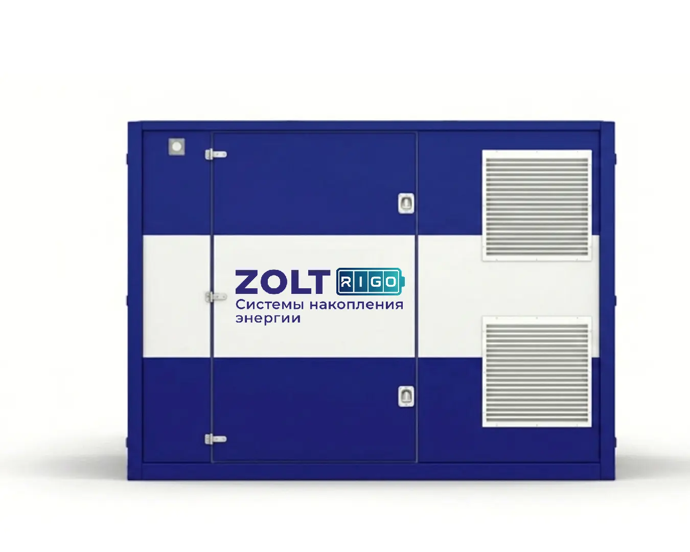
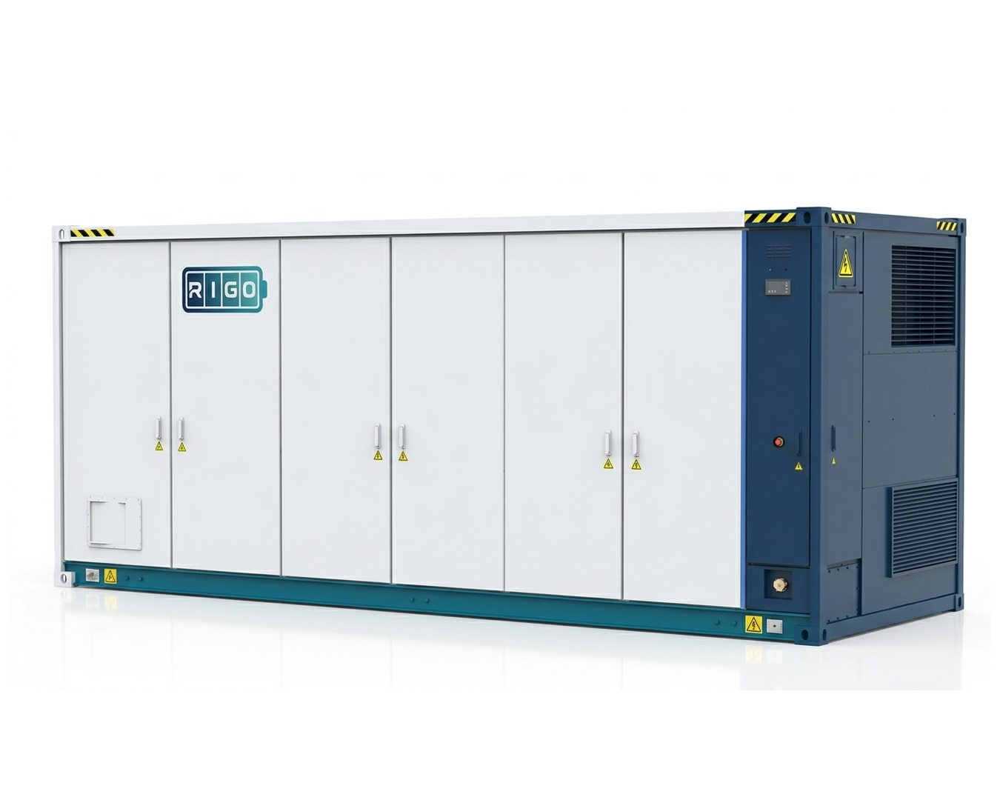
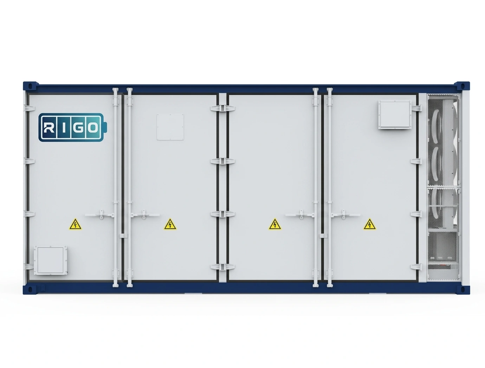

Поддержка нагрузки
Запас энергии можно использовать в периоды повышенного потребления. При подборе проверяем мощность, длительность пиков и возможность заряда между ними.

Другие контейнерные решения
Система наружного исполнения для управления нагрузкой и резервирования выбранного оборудования. Номинальная энергия DC до 625 кВт·ч, полная мощность до 400 кВА.
Стоимость — по конфигурации проекта
Запросить предложение ↗Запас энергии можно использовать в периоды повышенного потребления. При подборе проверяем мощность, длительность пиков и возможность заряда между ними.
Согласуем накопление и выдачу энергии с графиком солнечной станции или генератора. Совместимость определяется схемой подключения и управлением.
Для выбранных нагрузок отдельно определяем время поддержки, допустимый перерыв и необходимые устройства переключения.
Для многовариантных моделей параметры приведены по исполнениям. Номинальный запас энергии не равен полезной энергии на нагрузке; длительность работы рассчитывается под объект.
| Параметр | Значение |
|---|---|
| Тип оборудования | Система накопления электрической энергии BESS |
| Серия | ZOLT RIGO QS |
| Химический состав ячеек | LFP (LiFePO4) |
| Номинальная ёмкость DC | До 625 кВт·ч |
| Номинальная полная мощность | До 400 кВА |
| Допустимая перегрузка, 60 с | До 50% |
| Максимальная полная мощность, 1 мин | До 150% от номинальной полной мощности |
| Номинальное напряжение | 400 В |
| Частота сети | 50 Гц |
| Стойкость к короткому замыканию AC | 17 кА |
| Запуск «с нуля» (Black Start) | Да |
| Максимальная температура окружающей среды | +45 °C |
| Минимальная температура окружающей среды | −20 °C |
| Класс защиты | IP55 |
| Защита от коррозии | CX/C5 |
| Допустимая влажность | До 100%, с конденсацией |
| Максимальная высота эксплуатации | 2000 м |
| Протоколы связи | Modbus TCP, OPC-UA, другие — по запросу |
| Каналы связи | 3G/4G, 100 Мбит/с CAT5 |
| Габариты (Д × Ш × В) | 3300 × 2220 × 2530 мм |
| Максимальный вес | До 10 500 кг |
| Исполнение корпуса | Антивандальное, для наружной установки |
| Система пожаротушения | Опционально |
| Брендирование корпуса | Опционально |
| Модель | Номинальная ёмкость DC | Номинальная полная мощность | Допустимая перегрузка 60 с | Вес |
|---|---|---|---|---|
| ZOLT RIGO QS 400/6 | 625 кВт·ч | 400 кВА | 30% | 10,5 т |
| ZOLT RIGO QS 400/4 | 416 кВт·ч | 400 кВА | 30% | 9,1 т |
| ZOLT RIGO QS 200/4 | 416 кВт·ч | 200 кВА | 50% | 9,1 т |
| ZOLT RIGO QS 200/3 | 312 кВт·ч | 200 кВА | 50% | 8,4 т |
Уточним нагрузку, условия размещения и режимы работы. В предложении зафиксируем исполнение оборудования, подключение, внешнюю коммутацию и объём пусконаладки.
Обсудить комплектацию ↗
↗Другие контейнерные решения
Контейнерные и модульные системы для индивидуального подбора под объект.

↗Другие контейнерные решения
Контейнерные и модульные системы для индивидуального подбора под объект.
 ↗
↗Другие контейнерные решения
Контейнерная система для предприятий и распределённой энергетики. Запас энергии до 2 084 кВт·ч; полная мощность до 2 000 кВА.
Расскажите о вашем объекте — сохраним выбранное решение вместе с заявкой.